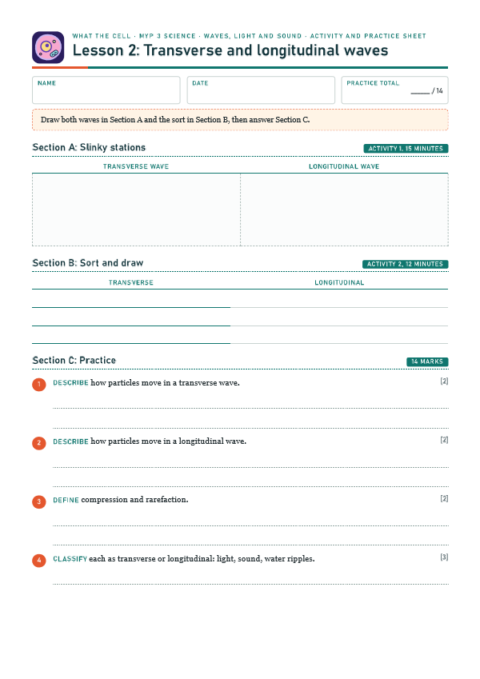

By the end of the lesson you can
- Describe transverse and longitudinal waves
- Identify compressions and rarefactions
- Classify examples of waves
- Model both types with a slinky
Keys: arrows or a presentation clicker move the slides, F for full screen. Slides with a red dot have a video or simulation.
Videos (all 5 minutes or less)
- 2:57
Transverse and Longitudinal Waves
FuseSchool. While you watch: How do particles move in each type? Slide 9.
Simulations
- Lab
- PhET
Print and practise

Activity and practice sheet
Used in the lesson’s activities, with practice questions. Your teacher has the answers.
Download (PDF)Lesson 2 slides
All 16 slides in one file, to read again or print. The video buttons on the slides open YouTube.
Download the slides (PDF)Revising? The Revision tab on the unit page has the unit notes and review.
Class activity pack
Everything to print for the lesson’s activities: picture cards, sorting mats, station cards with their kit lists, and the teacher’s set-up notes. Print it before class.
Download the activity pack (PDF)Notes: Transverse and longitudinal waves
transverse wave
Vibrations are at right angles to the direction the wave travels. For example: light, water ripples.
longitudinal wave
Vibrations are along the direction the wave travels. For example: sound.
compression
A region where particles are squashed together. For example: in a sound wave.
rarefaction
A region where particles are spread out. For example: in a sound wave.
vibration
A fast back-and-forth movement. For example: a guitar string.
seismic wave
A wave through the Earth from an earthquake. For example: P and S waves.
Key words
| transverse wave | vibrations at right angles |
|---|---|
| longitudinal wave | vibrations along the direction |
| compression | particles squashed together |
| rarefaction | particles spread apart |
| vibration | back-and-forth movement |